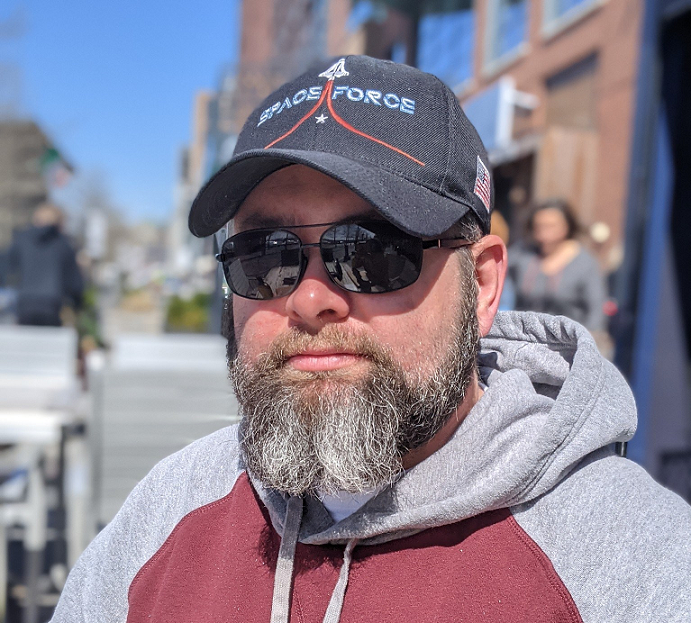

John G. West III

Controls and Electronics Technologist and U.S. Army Veteran
I bridge hardware and software. I hold a B.S. in Computing Science and am completing a B.S. in Electronics and Computer Engineering Technology at Sam Houston State University, with coursework in circuits, control systems, engineering graphics, and alternative energy.
Technical Expertise
My focus is controls, automation, and building automation systems. I build PLC and embedded projects with OpenPLC and STM32 hardware, draft in AutoCAD, and troubleshoot electrical and mechanical systems. My programming background in C++, Java, Python, and SQL lets me work on both sides of a system, the hardware and the code that drives it.
My Journey
Before this, I served in the U.S. Army from 2002 to 2012, including a combat deployment during Operation Iraqi Freedom and a tour as an Army recruiter. That experience built the habits I bring to technical work: reliability, attention to detail, and staying calm and methodical under pressure.
Beyond Code
I also run Oinkenbach Acres, a small livestock operation in Conroe, Texas, where I handle operations, records, and equipment troubleshooting myself. That business is where several of my projects started, including an app I built to track feed costs and optimize mixes.
I'm looking for controls, automation, electrical design, and building automation work in the Houston and Conroe area.